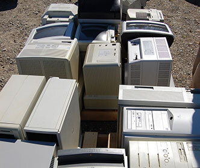

E-Waste and Recycling
With consumers replacing computers, phones, tables and laptops and other electronic goods more and more often these days, our landfills are becoming full of these obsolete and broken devices. Some of the components can be recycled. Many electronic products can be recycled and re-used but only about 22% of e-waste is recycled which means that 78% ends up as trash. Millions of tons of e-waste gets shipped around the world for other countries to try and extract some value from the rubbish. In doing so, the harm caused by e-waste is not restricted to the country of the consumer but also to many of the developing countries of the world. Old but functioning electronic equipment that is surplus to requirements for some Government Departments and businesses can be refurbished for use by disadvantaged communities. In this way, the quantity of e-waste to landfill can be reduced. Where does e-waste go?
Trade in your old phone here: Swapkit
Electronic and computer recycling here: Itrecycla
